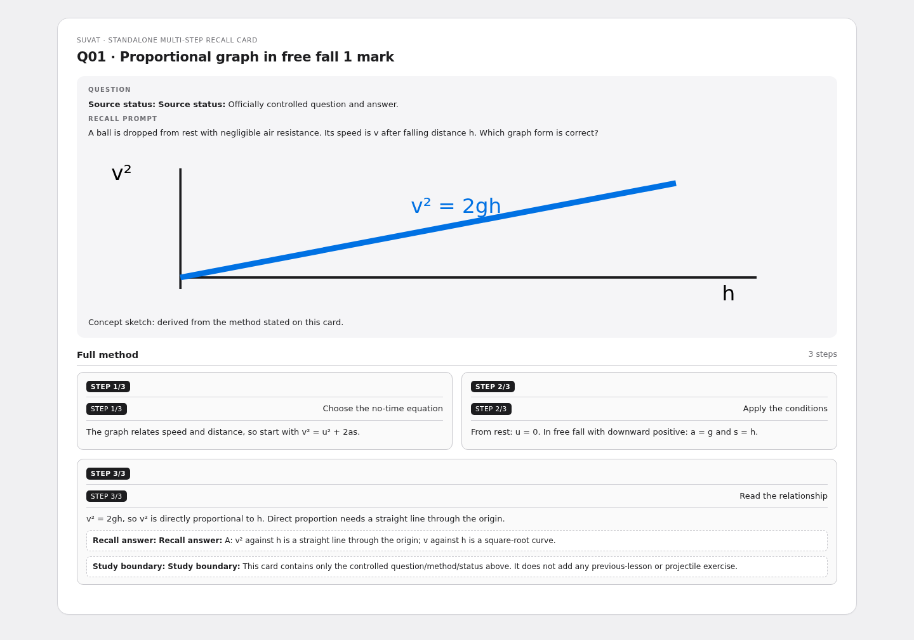
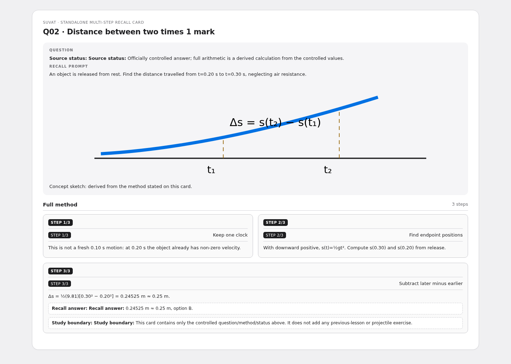
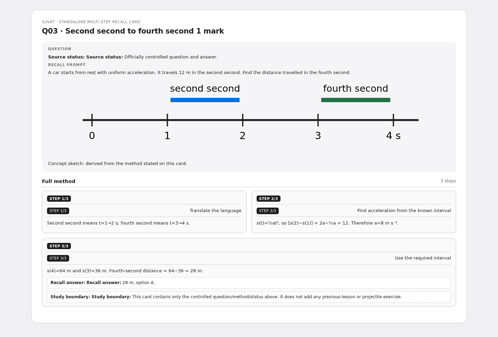
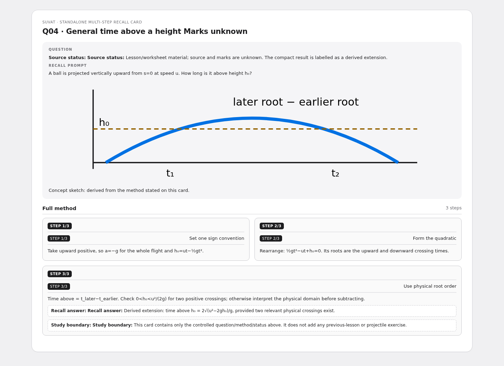
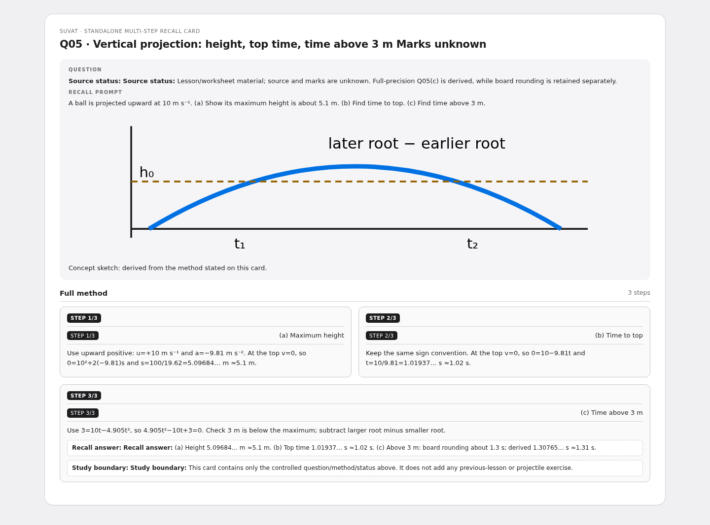
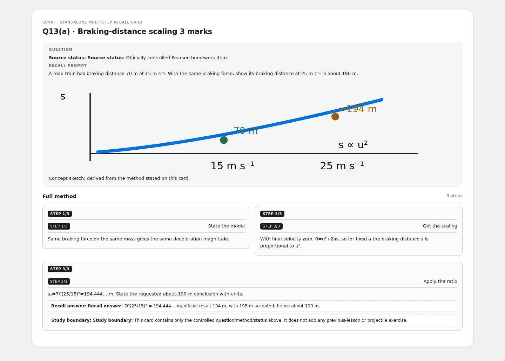
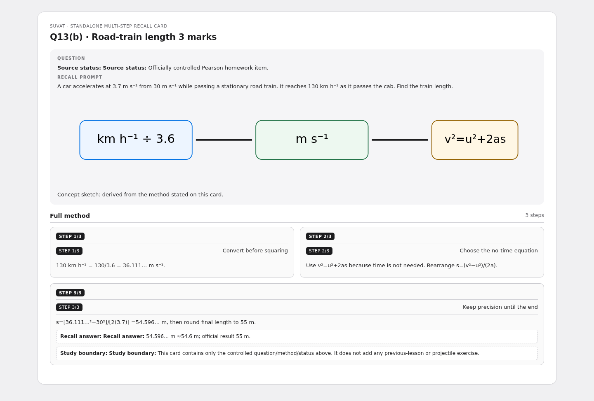

SUVAT — multi-step recall cards
Approved learner cards rebuilt in the canonical S1 question-and-work-box layout. Each same-stem PNG shows the fully revealed method.
7 cardsLamprosMulti-step
Q01 · Proportional graph in free fall 1 mark

Q02 · Distance between two times 1 mark

Q03 · Second second to fourth second 1 mark

Q04 · General time above a height Marks unknown

Q05 · Vertical projection: height, top time, time above 3 m Marks unknown

Q13(a) · Braking-distance scaling 3 marks

Q13(b) · Road-train length 3 marks
